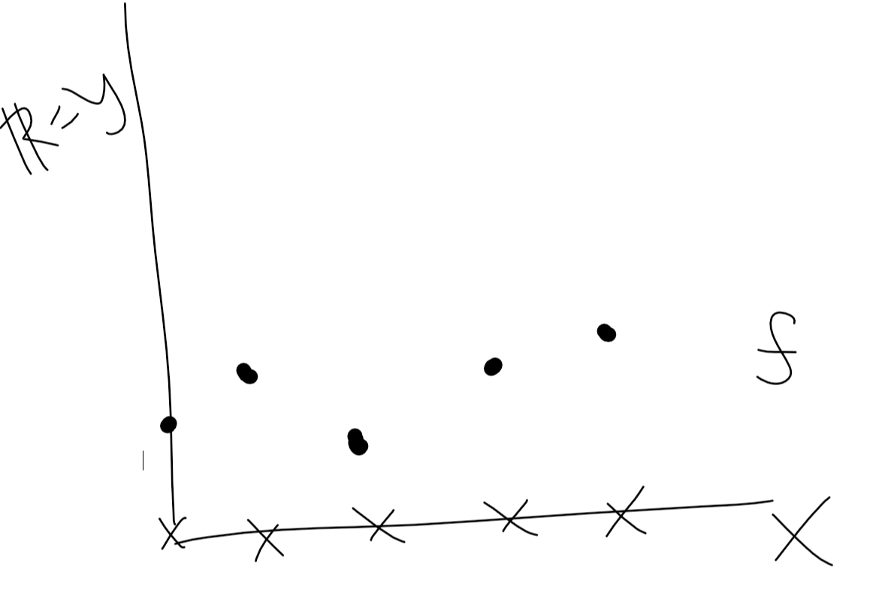

6 Class 5: 2023-08-18
6.1 Open/closed Sets, cont
6.1.0.1 Def “adherent”
Call \(x\in X\) an adherent point of \(E\), if, for each \(\varepsilon >0, B(x, \varepsilon) \cap E \neq \emptyset\).
6.2 Compactness
6.2.1 Def “open cover”
Fix \(E \subseteq X\). Call \(\{F_i: i \in I\}\) a cover of \(E\) if each \(F_i \subseteq X\) and \(E \subseteq \cup_{i \in I} F_i\).
Call \(\{F_i: i \in I\}\) an open cover of \(E\) if it is a cover and each \(F_i\) is open.

6.2.2 Def “Compact”
Call \(E \subseteq X\) compact if every open cover admits a finite subcover.
That is, if \(\{F_i: i \in I\}\) is an open cover of \(E\) then there exists finite \(J \subseteq I\) such that \(\{F_i: i \in J\}\) is also a cover of \(E\).
Example 9 Let \((X,d) = (\mathbb{R}, d^u)\)
Let \(E = (0,1)\). \(\{\mathbb{R}\}\) is an open cover of \(E\) (trivial example.)
\(\{(1/n,1): n \in \mathbb{N}\}\) is an open cover of \(E=(0,1)\). (note that \(\cup_{n\in\mathbb{N}}(1/n,1)=(0,1)\))
For any \(J \subseteq \mathbb{N}\) finite, \(\cup_{n\in J} (1/n, 1) = (1/m, 1)\) where \(m\) is the max number in \(J\).
6.2.2.1 Def “bounded set”
Call \(E \subseteq X\) bounded if there exists \(x \in X\) and \(r>0\) such that \(E \subseteq B(x,r)\)
6.2.2.2 Proposition 5
If \(E\) is compact then \(E\) is both closed and bounded.
Example: \((X, d) = (\mathbb{R}, d^u)\) is closed, but not bounded so it’s not compact. (remember, \(\mathbb{R}\) is both closed and open)
Example 10a Will show \(E\) can be close and bounded but need not be compact. Let \(X = \{1/n, n\in\mathbb{N}\}\), \(d\) = discrete metric.
Then \(E=X\) is closed. It’s also bounded: pick any \(x \in X\) and get \(E \subseteq B(x,2)\). But, it doesn’t admit a finite subcover: \(\{\{1/n\}: n \in \mathbb{N}\} \rightarrow\) covers \(E\) and is open.
Example 10b \((X,d) = (\mathbb{R}, d^u)\) \(E = \{1/n: n \in \mathbb{N}\}\) then a cover is \(\{1/n: n \in \mathbb{N}\}\) but this is not open.
- all singleton sets (and even all finite sets) are NOT open for some reason?????????
6.2.2.3 Heine-Borel Theorem
Let \((X,d)=(\mathbb{R}^n, d^{euc})\). A set \(E \subseteq \mathbb{R}^n\) is compact \(\iff\) it is closed and bounded.
- Note that this an iff relationship only if you are in \(\mathbb{R}^n\). Not necessarily true outside of \(\mathbb{R}^n\)
6.3 Continuity
Fix \((X, d_x)\) and \((Y,d_y)\). Look at \(f: X \rightarrow Y\).

6.3.0.1 Def “continuous at”
Say a function \(f: X \rightarrow Y\) is continuous at \(x\) if for each \(\varepsilon > 0\) there exists \(\delta >0\) such that \(d_x(x,x') < \delta\) implies \(d_y(f(x),f(x')) < \varepsilon\)
for each \(\delta > 0\) there is an \(x'\) with \(d_x(x,x') < \delta\) but \(f(x') > J\) and so \(d_y(f(x),f(x')) > \varepsilon\)
\(\varepsilon = d_y(f(x), J)\)

6.3.0.2 Proposition 1
A function \(f: X \rightarrow Y\) is continuous at \(x\in X \iff\) for each sequence \((x_n: n \geq 1)\) on \((X, d_x)\) with \(lim_{n\rightarrow \infty} x_n = x \in X, lim_{n\rightarrow \infty} f(x_n) = f(x) \in Y\)
6.3.0.3 Def “continuous function”
A function \(f: X \rightarrow Y\) is continuous if it is continuous at each \(x\in X\).
6.3.0.4 Proposition 2
A function \(f: X\rightarrow X\) is continuous if and only if, for each open set, \(U \subseteq Y, f^{-1}(U) \subseteq X\) is open.

\(x \in f^{-1}(u)\) is not an interior point because for each \(B(x, \varepsilon)\) there is discontinuity within the ball.
Example 1 Simple examples of continuous functions:
- \((X, d_x) = (Y,d_y)\), take \(f: X\rightarrow Y\) to be the identity function, \(f(x)=x\in Y = X\).
Fix \(U \subseteq Y = X\) open in \((Y, d_y) \Rightarrow f^{-1}(U)=U\) open in \((X,d_x)=(Y,d_y)\)
start with \(\{x\}\) in \((Y,d_y) = (\mathbb{R}, d^{disc})\) then \(f^{-1}(\{x\}) = \{x\}\) not open in \((\mathbb{R}, d^{u})\)
singleton sets are open in discrete metric, but not in Euclidean metric!
- Constant function: \(f: X\rightarrow Y\) there exists \(y^* \in Y\) such that \(f(x)=y^*\) for all \(x\in X\).
Example 2 \((X, d_x)\) where \(X\) is finite. Any \(f: X \rightarrow Y\) is continuous.

key: since \(X\) is finite, \(f^{-1}(U)\) must be open since any subset of a finite set is open.
Example 3 \(X=Y=\mathbb{R}, d_x=d_y=d^u\). \(f(x)=mx+b\) for \(m \neq 0\).
to show \(f\) is continuous, fix \(\varepsilon >0\) and some \(\delta >0\) such that \(|x-x'|< \delta\) then \(|mx+b - (mx' + b)| = |m||x-x'| < \varepsilon\). Take \(\delta = \varepsilon / |m|\) and we can show this.
6.3.0.5 Proposition 3
Fix \(f: X \rightarrow \mathbb{R}\) and \(g: X \rightarrow \mathbb{R}\) that are both continuous (on \((x, d_x), (\mathbb{R}, d^u)\))
- \(f+g\) is continuous (\(x \rightarrow f(x) + g(x)\))
- \(f * g\) is continuous (\(x \rightarrow f(x) * g(x)\))
- \(f/g\) is continuous (if, for each \(x\in X, g(x)\neq 0\)) (\(x \rightarrow f(x) / g(x)\))
- \(\max\{f,g\}\) is continuous (\(x \rightarrow \max\{f(x), g(x)\}\))
- \(\min\{f,g\}\) is continuous (\(x \rightarrow \min\{f(x), g(x)\}\))
- \(|f|\) is continuous (\(x\rightarrow |f(x)|\))
so, using prop 3 on example 3 could simplify things. we’d just say, “well, we know any constant (\(m\) and \(b\)) function is continuous, and we know the identity function (\(f(x) = x\)) is continuous, and we know that the product of two continuous functions is continuous (number 2 in prop 3) and the sum of two continuous function (\(mx\) and \(b\)) is continuous, so \(f(x) = mx + b\) is continuous.”
6.4 Other notions of continuity
6.4.0.1 Def “lower semi-continuous”
Fix a function \(f: X\rightarrow \mathbb{R}\).
- \(f\) is lower semi-continuous if, for each \(c \in \mathbb{R}, f^{-1}(c,\infty)\) is open
- \(f\) is upper semi-continuous if, for each \(c \in \mathbb{R}, f^{-1}(-\infty, c)\) is open
It’s immediate that if \(f\) is continuous, then it’s both upper and lower semi-continuous. It’s less obvious (though we will see this is, indeed, true later) that if \(f\) if upper and lower semi-continuous that \(f\) is continuous.
Example 4b \(f: \mathbb{R} \rightarrow \mathbb{R}\) such that \[f(x) = \begin{cases} 0 \text{ if } x \leq 0 \\ 1 \text{ if } x>0 \end{cases}\]
Choose \(c = 1/2\), an arbitrary point between 0 and 1.
Checking upper semi-continuity: \[f^{-1}(-\infty, 1/2) = (-\infty, 0]\] this is not open, so we fail upper semi-continuity. so, \(f\) is not continuous.
Checking lower semi-continuity: \[f^{-1}(c,\infty) = \begin{cases} \emptyset \text{ if } c \geq 1 \\ (0,\infty) \text{ if } 0 \leq c < 1 \\ \mathbb{R} \text{ if } c < 0 \end{cases}\]
These are all open sets, so \(f\) is lower semi-continuous.
Now, changing the function:
\[g(x) = \begin{cases} 0 \text{ if } x<0 \\ 1 \text{ if } x \geq 0 \end{cases}\]
Checking upper semi-continuity: \[g^{-1}((-\infty, c)) = \{x\in \mathbb{R}: f(x) < c\}\]
\[g^{-1}((-\infty, c)) = \begin{cases} \emptyset \text{ if } c \leq 0 \\ (\infty, 0) \text{ if } 0 < c \leq 1 \\ \mathbb{R} \text{ if } c > 1 \end{cases}\]
Checking lower semi-continuity: \[g^{-1}((1/2, \infty)) = [0,\infty)\] which is NOT open.